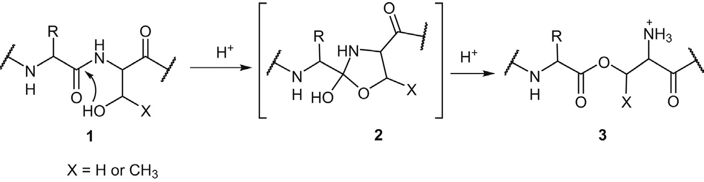
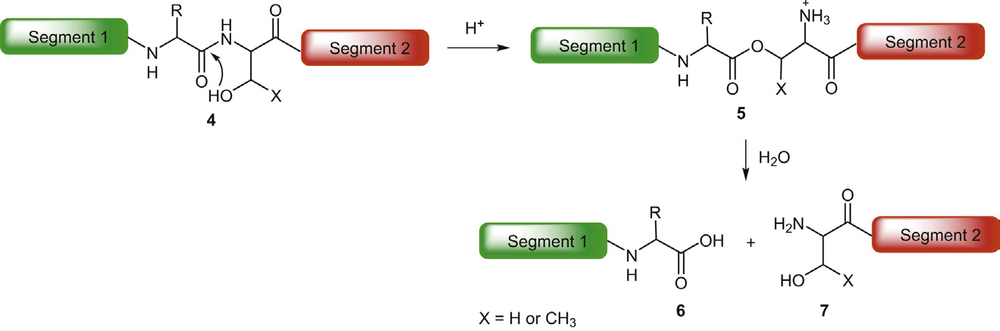
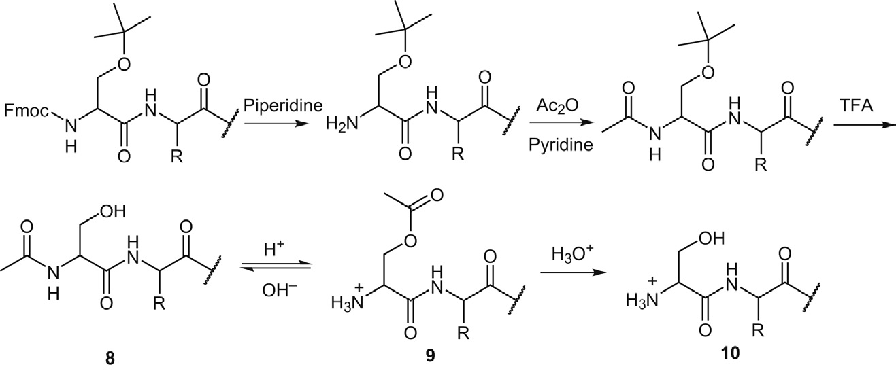
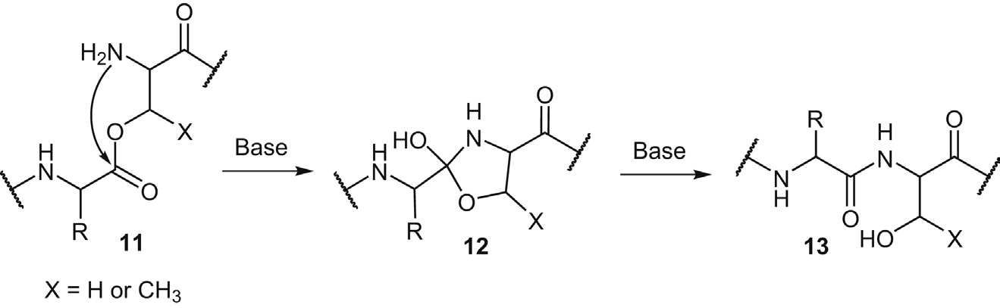
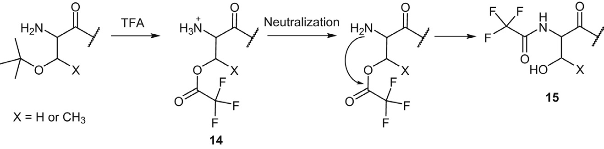
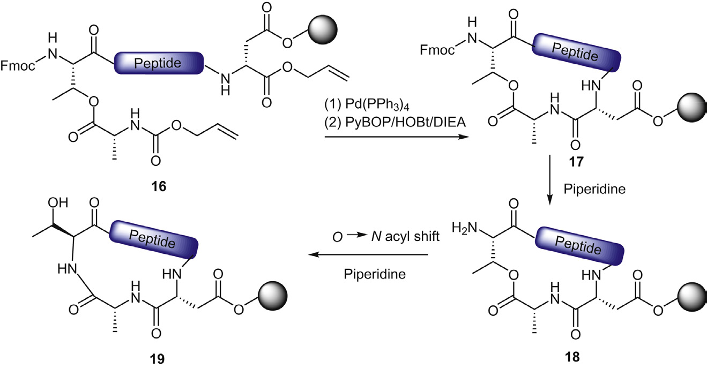

Chapter 4: Peptide Rearrangement Side Reactions
多肽重排副反应学习笔记
学习日期：2026-03-26 章节：Chapter 4 - Peptide Rearrangement Side Reactions 页码：第80-95页
核心问题：多肽合成和储存过程中的重排副反应是一类常见的副反应，由于多种官能团的存在和不同反应条件（如pH值变化），以及难以预测的立体协同效应，某些不稳定的多肽序列容易发生重排。
主要挑战：
1. 分析难度大：重排产物通常与目标多肽是异构体，需要开发专门的分析方法
2. 分离困难：某些重排过程导致含有冗余残基/片段的杂质，难以与目标产物分离
3. 影响下游工艺：这些杂质给下游纯化过程带来压力

Figure 4.1: Proposed mechanism of acid-catalyzed peptide acyl N→O migration (Page 81)
酰基迁移（Acyl migration）在有机化学中是一个常见过程，已被用于许多化合物的合成。其中O-酰基异肽合成策略（O-acyl isopeptide synthetic tactic）作为杰出代表，在肽制备领域获得了广泛应用，特别是对于那些因肽链聚集而复杂的合成。
自然现象：蛋白质自催化降解（Protein autocatalytic degradation）- 某些含有特定序列的天然蛋白质会在某些位点发生断裂，被分解为不同片段。许多蛋白质自催化降解过程都是基于分子内N→O酰基迁移的化学基础，导致形成异构酯中间体。
历史发现：
• 最初在强酸（H₂SO₄、HF、HCl）处理底物的条件下被检测到
• 随着Fmoc化学的广泛应用，TFA催化的酰基N→O迁移成为肽合成中最常检测到的副反应之一
机理步骤（Figure 4.1）：
1. 引发：Ser或Thr上的羟基对前置骨架酰胺键发起酸催化的亲核攻击
2. 中间体形成：生成5元环羟基噁唑烷中间体2
3. 重排：在酸性条件下重排为相应的酯异构体3
4. 替代路径：有观点认为浓H₂SO₄催化的酰基N→O迁移通过噁唑啉中间体进行
可逆性：酸催化的酰基N→O迁移是可逆过程，在中性或碱性条件下可重新导向酰胺形成
平衡驱动：
• 酸性环境：释放的氨基基团的质子化是驱动平衡向酯形成方向的关键推动力
• 中性/碱性环境：酯3会经历快速的酰基O→N迁移，再生原始酰胺1

Figure 4.2: Acidolysis of peptide containing -Xaa-Ser/Thr- unit (Page 82)
案例1：肽侧链全局脱保护过程中的酰基N→O迁移（Figure 4.2）
过程：
1. 普通肽4经历侧链保护基裂解过程
2. 在-Xaa-Ser/Thr-序列位点发生伴随的酰基N→O迁移
3. 重排为相应的异构酯5
4. 酯5在水相条件下的合成、后处理、分离、纯化甚至储存过程中发生水解降解
5. 分解为肽片段6和7

Figure 4.3: N→O acyl migration on Nα-Ac-Ser peptide and subsequent de-acetylation process (Page 82)
案例2：N端Ac-Ser肽的N→O酰基迁移（Figure 4.3）
过程：
1. 带有N-Ac-Ser基团的肽8的Nα-基团经历乙酸介导的乙酰化过程
2. 衍生的Nα-Ac-Ser肽随后经历TFA主导的肽侧链全局脱保护
3. N端Nα-Ac-Ser基团部分经历TFA催化的酰基N→O迁移
4. 产生异构的H-Ser(Ac)杂质9
5. 如果酯衍生物9经历进一步水解降解，可转化为脱乙酰化副产物10
针对酰基迁移易感肽产品合成的注意事项：
1. 避免强酸：尽可能避免使用HF、H₂SO₄、HCl和TFMSA等强酸
2. 控制水的添加：如果在肽全局脱保护中不能省略强酸，应防止添加水作为清除剂或共溶剂
3. 降低酸浓度：降低用于去除侧链保护基的酸浓度
4. 缩短酸处理时间：酰基N→O迁移的程度直接与受影响肽的酸处理持续时间相关，理性缩短易感肽的酸应力可有效减少不良肽酯形成
5. 纯化和储存过程中的谨慎：从RP-HPLC收集的产品级分应尽快进行冷冻干燥，或在后续处理之前中和
6. 逆向恢复：在发生酰基N→O迁移的情况下，可通过用易去除的碱（如稀氨水溶液）处理受影响肽，将平衡逆转为酰胺形成方向

Figure 4.4: Proposed mechanism of base-catalyzed peptide acyl O→N migration (Page 84)
定义：碱催化的酰基O→N迁移可被视为酸催化的酰基N→O迁移的逆反应
应用：肽合成中广泛应用的O-酰基异肽策略利用了酰基O→N迁移在碱性条件下的固有特征，从相应的酯前体再生目标酰胺产品
机理步骤：
1. 起始：带有酯基团的肽11在碱的促进下
2. 亲核攻击：Nα对相关酯键发起亲核攻击
3. 中间体形成：形成5元环羟基噁唑烷中间体12
4. 开环转化：经历开环和转化为相应的酰胺异构体13

Figure 4.5: Nα-trifluoroacetylation side reaction on N-terminal Ser/Thr peptide (Page 84)
三氟乙酸酯副产物的形成：
Boc模式SPPS中的情况：
• 用于Nα-Boc去除的TFA可能与树脂上残留的未酰化羟基基团反应
• 形成的三氟乙酰衍生物可能在随后的碱处理步骤引发酰基O→N迁移
• 三氟乙酰基团从羟基迁移到肽骨架上的Nα，导致形成Nα-三氟乙酰肽副产物
N端Ser/Thr肽合成中的情况（Figure 4.5）：
• 在肽侧链全局脱保护步骤，Ser/Thr上释放的羟基侧链可能被TFA官能化
• 形成H-Ser/Thr(TFA)-衍生物14
• 该中间体可能在随后的后处理或纯化过程中经历三氟乙酰O→N迁移
• 生成Nα-三氟乙酰化副产物15

Figure 4.6: Base-catalyzed acyl O→N migration in cyclic peptide synthesis (Page 85)
环肽合成中的副反应（Figure 4.6）：
原始合成策略：
1. 树脂上线性前体肽16用Pd(PPh₃)₄处理，去除Ally和Alloc保护基
2. 释放的羧基和氨基通过PyBOP介导的偶联形成环状中间体17
3. 用哌啶处理17以去除Thr-Nα上的Fmoc保护基，得到受保护的环肽18
问题：中间体18在哌啶处理时经历了不良的酰基O→N迁移
解决方案：采用Trt而不是Fmoc作为相关Thr的Nα-保护基，由于Nα-Trt可用稀酸溶液去除，碱催化剂相关的酰基O→N迁移的根本原因被专门解决
1. 酰基迁移是可逆过程：
• 酸性条件：N→O迁移（酰胺→酯）
• 碱性/中性条件：O→N迁移（酯→酰胺）
2. 主要影响因素：
• pH值（酸/碱环境）
• 序列特异性（Ser、Thr、His等残基）
• 处理时间
• 温度
• 溶剂系统
3. 预防策略：
• 避免极端pH条件
• 缩短酸/碱处理时间
• 选择合适的保护基策略
• 优化纯化和储存条件
4. 分析方法挑战：
• 重排产物通常是目标产物的异构体
• 需要开发专门的检测方法
• 可能需要使用特殊色谱条件或质谱技术
本章的重要性：
• 重排副反应是肽合成中常见但容易被忽视的问题
• 理解这些机理对于设计和优化合成路线至关重要
• 预防胜于治疗 - 在合成设计阶段就应考虑这些副反应
实际应用价值：
• 帮助识别合成中可能出现的杂质
• 指导保护基策略的选择
• 优化反应条件以减少副反应
需要进一步学习的方向：
• 更多实际案例研究
• 分析方法开发
• 新型保护基和合成策略